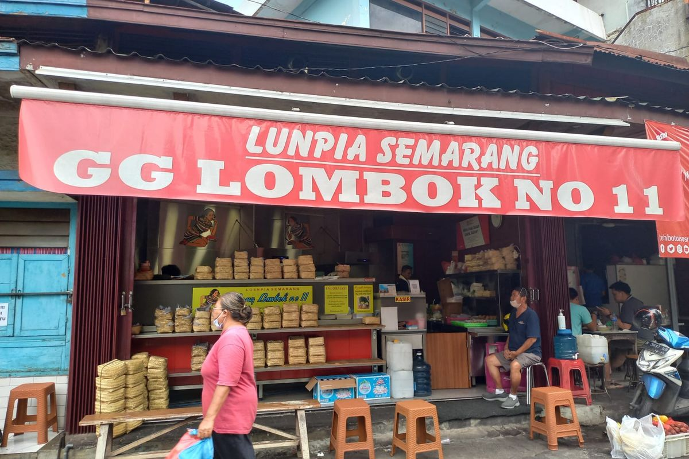
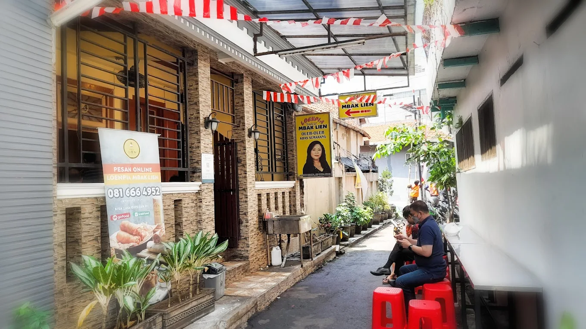
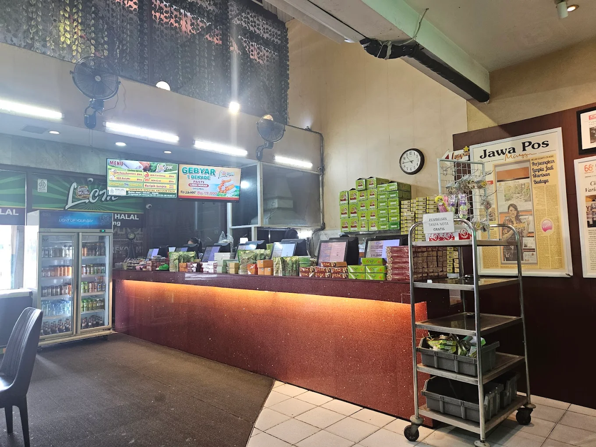

←
Home
Kategori
Halal
Non Halal
Jajanan
Contact Us
Best Recommendation

Lunpia Gang Lombok
Gg. Lombok No.11, Purwodinatan, Kec. Semarang Tengah, Kota Semarang, Jawa Tengah 50137
Contact : 0816-4881-194
Detail Lokasi

Loenpia Mbak Lien
Jl. Pemuda Gg. Grajen No.1, Pandansari, Kec. Semarang Tengah, Kota Semarang, Jawa Tengah 50138
Contact : 0816-664-952
Detail Lokasi

Lunpia Cik Me Me
Jl. Gajahmada No.107, Miroto, Kec. Semarang Tengah, Kota Semarang, Jawa Tengah 50135
Contact : 0851-0000-0727
Detail Lokasi